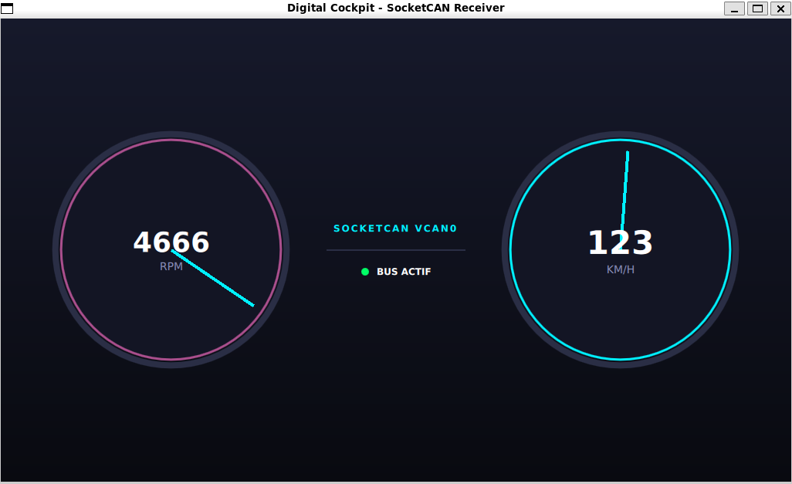

Application de tableau de bord automobile en temps réel développée en C++17 et Qt6/QML, connectée à un bus SocketCAN sous Linux.
Le projet simule le fonctionnement d'un combiné d'instruments lisant la télémétrie d'un véhicule (vitesse, régime moteur, températures, voyants) diffusée sur une interface réseau CAN virtuelle.

🚀 Fonctionnalités Clés
- Traitement Temps Réel : Réception et découpage des trames CAN haute fréquence sans bloquer le rendu graphique.
- Architecture Découplée : Séparation stricte entre le moteur de simulation (C++ / SocketCAN) et la couche d'affichage (Qt Quick / QML).
- Intégration Linux Native : Exploitation directe des sockets du noyau Linux (
vcan0) via l'API SocketCAN.
- Interface Moderne : Rendu fluide à 60 FPS avec indicateurs de vitesse, compte-tours et témoins d'alerte.
🛠️ Stack Technique
- Langage : C++17, QML (Qt Quick)
- Framework IHM : Qt 6 (Core, Gui, Quick, Qml)
- Système & IPC : Linux SocketCAN, POSIX Sockets, Multithreading (
std::thread, QThread)
- Build & Outillage : CMake,
can-utils, GCC / GDB
- Environnement : Linux (Debian / Ubuntu / WSL2)
🏗️ Architecture du Projet
car-dashboard/
├── CMakeLists.txt # Configuration et gestion de compilation CMake
├── docs
│ └── preview.png # Aperçu de l'interface du tableau de bord
├── README.md # Documentation du projet
├── scripts
│ └── simulate_car.py # Script de simulation des données du véhicule
└── src
├── can_receiver.cpp # Réception asynchrome des trames CAN sur vcan0
├── can_receiver.h # Déclaration de la classe de réception CAN
├── main.cpp # Point d'entrée de l'application Qt
└── main.qml # Interface graphique du tableau de bord en QML
⚙️ Compilation et Exécution
1. Prérequis
Sur un système basé sur Debian ou Ubuntu (nativement ou sous WSL2) :
sudo apt update
sudo apt install -y build-essential cmake qt6-base-dev qt6-declarative-dev can-utils
2. Configuration du bus CAN virtuel (<tt>vcan0</tt>)
# Charger le module noyau vcan
sudo modprobe vcan
# Créer et activer l'interface virtuelle
sudo ip link add dev vcan0 type vcan
sudo ip link set up vcan0
3. Compilation du projet
# Création du dossier de build
mkdir build && cd build
# Compilation avec CMake
cmake ..
make
4. Lancement
🧪 Tester avec le bus CAN
Pour envoyer manuellement une trame CAN de test sur l'interface vcan0 et vérifier la réaction du tableau de bord :
# Exemple : Envoi d'une trame avec l'ID 0x123
cansend vcan0 123#1122334455667788
Injection dynamique via le script Python
Un script d'accélération progressive est fourni sous scripts/simulate_car.py :
python3 scripts/simulate_car.py
✒️ Auteur
- GitHub : @amorirReverse
- Projet : Portfolio Développeur C++ / Linux Embarqué